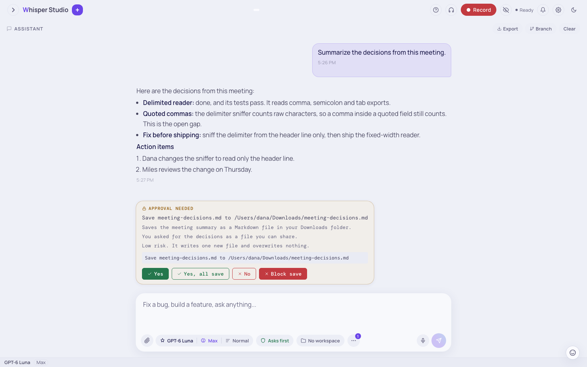

Saving files and creating documents
Ask for a Word document, a deck, a spreadsheet, a PDF, or a plain file. Whisper Studio saves it and does not ask where. The app makes the full file first. Then one approval card shows the exact destination path.
Examples of requests are "write up these notes as a Word doc" and "save that as report.md in Downloads". The app gets the destination from your words, or it uses a default. The app makes the complete file and keeps it in its staging area. Then one card asks you to approve the move. The app does not show a folder dialog. If you refuse, no partial file stays at the destination.
The app makes a file only when you ask for one. An answer, a summary, a plan, or a report stays in the chat. To get a file, use one of these words: save, store, export, or download. You can also name a file, a file type (for example a Word document, a PDF, a spreadsheet, or a deck), or a location on the disk.
The app does not ask where
The file tools ws_create_file, create_docx,
create_pptx, create_xlsx, and create_pdf find the
destination in this sequence:
-
Your words
If you name a location, the file goes there. "in Downloads" gives
~/Downloads/report.docx. "on my Desktop" gives~/Desktop/.... All absolute paths operate, and the app expands~. -
The connected workspace
If a workspace is connected and you do not name a location, the file goes into the project. The app makes sure that the path stays in the workspace root.
-
Your Documents folder
If there is no workspace and no location, the file goes to
~/Documents/<filename>. The approval card shows the full path. The answer tells you where the file is.
save_file does not use the workspace. It uses the location from your words. If
you do not name a location, it uses Documents or Downloads, and the default is Documents.
A save does not connect a workspace. The app keeps the destination folder in a short list of recent folders. Thus you can open the file later or show it in Finder. The app does not connect or index that folder.
Make, stage, then move
The sequence is important. When the tool runs, it makes the complete file immediately. It writes the file to a staging area in the data folder of the app. Then the approval card shows. The approval does not run a tool. The approval moves the finished file from the staging area to the destination.
- The content cannot fail after approval. The file exists before the card shows. Thus an approval can only succeed or show a move error, for example a permission error on the destination folder.
- A refusal leaves nothing at the destination. The staged copy stays in the app folder. The app deletes staged files after 24 hours.
- The card shows the real path. The card shows the exact absolute path of the file and its size, not only a folder name.

Save notes.txt to /Users/.../Documents/notes.txt). Yes does the move.
Yes, all save approves the next saves of this session. Block save refuses
all saves of this session.Direct saves have their own approval category, save. Workspace writes use a
different category. Thus "Yes, all write" does not approve files in your home folders. Bypass
mode also asks for a save outside the workspace. You can set a mode or a rule for the
save category. See Permissions &
approvals.
When the destination is in a connected workspace, the
document tools do not use the staging area. They send the finished file in a normal workspace
write approval. You get the same single card, and the file is also complete before the card
shows. The write uses the write category. The staging area is only for
destinations outside a workspace.
The four document tools
Ask for a document in plain language, for example "turn this into a deck" or "make me a spreadsheet of these". The assistant then uses the applicable tool. Each tool makes real Office or PDF files on your Mac. Each tool adds the correct file extension if it is missing. Use these four tools for usual documents. For special formats, or to edit a file that exists, see full control.
| Tool | Output | Input |
|---|---|---|
create_docx | A Word document (.docx) | The document body as HTML. The tool changes headings, paragraphs, breaks, and text styles into native Word formats. It also changes code, quotes, nested lists, text color, and tables with cell colors. For an unknown tag, the tool keeps the text. |
create_pptx | A PowerPoint deck (.pptx) | The slides in sequence. Each slide has a title and bullet points. |
create_xlsx | An Excel workbook (.xlsx) | One or more sheets. Each sheet has a name and rows of cell values. |
create_pdf | A PDF (.pdf) | A title and paragraphs of text. |
The standard layout
All the documents use one standard layout
(server/documents/standards.py). The app applies it each time:
| Format | Standard |
|---|---|
| docx | A4 page, 1 in margins, Calibri 11 pt body text, and 16 pt, 13 pt, and 12 pt headings. |
| pptx | 16:9 slides, the Calibri theme, and placeholders at the full width. |
| xlsx | A bold header row, a frozen top row, and column widths that fit the content. A maximum width stops one long cell from making a very wide column. |
| A4 page, 1 in margins, and 11 pt body text with comfortable line spacing. The tool uses reportlab. |
Full control: formats and edits
The four tools accept only a fixed input: a document body as HTML, titles and bullets, rows of values, or paragraphs of text. Thus they cannot make these items:
- Cell shading and fills, merged cells, and custom borders.
- Fonts and colors for each word.
- Shapes, text boxes, images, and charts.
- Number formats and speaker notes.
- Headers, footers, and page breaks.
Word documents can have headings, lists, tables, and cell background colors. But merged cells, fixed column widths, images, and page breaks are not available. Also, the four tools cannot change a file that exists. They only make new files.
For a special format, the assistant uses office_script. Examples are "shade the
header row blue", "merge those cells", and "add our logo to slide 1". The assistant also uses it
when you ask for a change to a document that exists. The tool runs Python code on your file with
python-docx, python-pptx, or openpyxl. You can ask for all the formats that these libraries
support. You do not need to name the tool.
Before an edit, the assistant usually calls inspect_document. This tool only
reads the file structure. It shows the tables with their rows and columns. It also shows the
used ranges, the merged cells, and the items on each slide. Thus the assistant changes the correct
cells.
For this tool, you approve code. Thus the card shows the code, and nothing runs before you click. The code runs in the sandbox, in a temporary folder, on a copy of your file. The app does not open your original file for writing. Only after the script succeeds does the app write the result to the destination. The tool has its own permission category, "Word/Excel/PowerPoint scripts".
Plain files: save_file and ws_create_file
Two more tools use the same flow for files that are not Office documents:
save_filesaves content as one file, for example Markdown notes, a CSV file, a script, or binary data. If you do not name a location, the file goes to Documents. This tool does not use or connect a workspace.ws_create_fileis the workspace tool for new files. With a connected workspace, it makes the file in the project and shows the diff card. Without a workspace, it stages the content and asks for the same save approval. You do not have to connect a folder.
The file link
After the move, the answer of the assistant contains a link to the new file. Click the link to open the file in its default macOS app, as with a double-click in Finder. For example, the docx opens in Word or Pages, the xlsx in Excel or Numbers, and the PDF in Preview. Cmd-click the link to show the file in Finder. The app keeps the destination folder, so the link operates later in the session.
A frequent sequence: attach a document, ask questions, then say "save that summary as a Word doc". Working with documents shows how to read documents. This page shows how to write them.
One deliverable, one file
When you ask for changes to a file that the assistant saved, you get a new version, not a new file. Examples are "make it fit one page" and "tighten the wording". The app writes each version to the same path and replaces the old version. The replacement is atomic. The app writes the new file next to the old file and then moves it over the old file. Thus the path always contains the full old document or the full new document.
Your folder contains one finished document, not files such as report v2.docx
and report final.docx. If you want a separate copy, ask for it, for example "save
it as a new version next to it". Then the assistant uses a new name.
Troubleshooting
| Symptom | Cause and correction |
|---|---|
| The approval says that the staged file does not exist | The app deletes staged files after 24 hours. Ask again. The tool makes and stages the file again. |
| The save failed with a "sensitive path" error | The app refuses destinations such as key stores and credential files in all modes. Select a usual folder. |
| No card shows, and files save without a question | You clicked Yes, all save in this session, or the save category has its own mode or rule. See Permissions & approvals. |
| The file went to Documents, but you wanted a different location | Name the location in the request, for example "in Downloads", "on my Desktop", or a full path. Your words have priority over the default. |
Related: Working with documents
(how to read documents). Permissions & approvals (the
save category and the category modes). The
workspace IDE (files in a project).